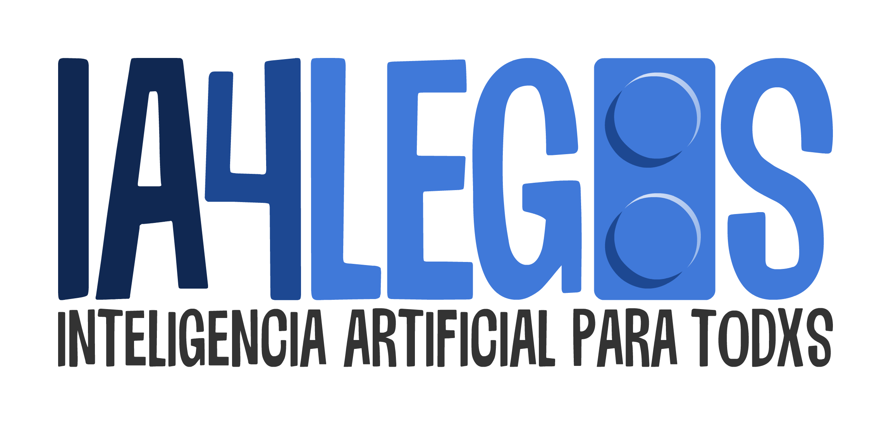

MachineLearning

Deep Learning
El padre moderno del concepto de Aprendizaje Profundo o Deep Learning fue el británico Geoffrey Hinton, que investigó sobre este campo en los años 80 del siglo XX. Sin embargo, no fue hasta 2010 que se volvió popular debido a su capacidad para resolver problemas complejos y mejorar la precisión de los resultados obtenidos mediante técnicas de aprendizaje automático. La idea principal que hay detrás del concepto de Aprendizaje Profundo es observar el cerebro humano e inspirarse en él para intentar reproducir de forma informática su comportamiento.
En la imagen inferior podemos observar una neurona real, que está compuesta principalmente de tres partes: soma (cuerpo celular), dendritas (canales de entrada) y axón (canal de salida). Descrito de una forma muy simplificada, las neuronas procesan y transmiten información por medios electroquímicos. Cuando una neurona recibe, a través de las dendritas, una cantidad de estímulos mayor a un cierto umbral, esta se despolariza excitando, a través del axón, a otras neuronas próximas conectadas a través de las sinapsis.

El aprendizaje profundo se centra en el uso de redes neuronales tanto para la representación como para el procesamiento de información. El funcionamiento se basa en la estructura biológica del sistema neuronal humano, de modo que el algoritmo es capaz de “aprender” y mejorar de manera autónoma a partir de los datos de entrada. Para reproducir el comportamiento del sistema neuronal biológico es necesario introducir los conceptos de neurona artificial y red neuronal artificial que veremos en el punto siguiente.
Generalmente, cuando se habla de aprendizaje automático (Machine Learning) y aprendizaje profundo (Deep Learning), se tiende a pensar que son términos intercambiables, pero esto no es cierto. Aunque ambos están relacionados con el campo de la inteligencia artificial (IA), existen diferencias significativas entre ellos. A continuación, se explican las principales diferencias entre estos dos tipos de aprendizaje:
- El aprendizaje profundo se enfoca principalmente en el uso de redes neuronales profundas para procesar la información recibida, utilizando modelos muy complejos y difíciles de interpretar. En cambio, el aprendizaje automático utiliza una amplia variedad de algoritmos, algunos de los cuales son más simples y fáciles de interpretar, aunque en algunos casos también se utilizan redes neuronales y la complejidad de los modelos puede variar.
- Generalmente, el aprendizaje profundo requiere una cantidad mayor de datos para poder entrenar los modelos de manera efectiva debido a la complejidad de las redes neuronales y su capacidad para capturar o elaborar patrones sobre los datos más complejos.
- En cuanto a las características, el aprendizaje automático requiere que los usuarios las creen e identifiquen con precisión, mientras que el aprendizaje profundo las aprende y crea nuevas de forma automática.
- Por último, el aprendizaje profundo se suele aplicar a problemas que requieren una mayor precisión, como por ejemplo en diagnósticos médicos o en el procesamiento del lenguaje natural.
A continuación se presenta un diagrama sobre la integración del aprendizaje profundo y el aprendizaje automático dentro de la inteligencia artificial.

Por último, veamos los campos de aplicación más habitual del aprendizaje profundo haciendo uso de la redes neuronales artificiales, entre los que destacan:
Procesamiento del lenguaje natural. Se utiliza en tareas como el filtrado de correos electrónicos para detectar los mensajes spam, en la predicción y autocompletado de palabras en textos, en chatbots para comprender lo que el usuario está solicitando y proporcionar una respuesta adecuada, y en traducciones de textos de un idioma a otro de manera automática y precisa.
Procesamiento de imágenes. Es un área en la que el aprendizaje profundo ha logrado grandes avances. Entre las tareas más destacadas se encuentran la clasificación y detección de objetos en imágenes, así como la segmentación y síntesis de imágenes.
Diagnósticos médicos. Los avances ayudan a los médicos a mejorar la precisión y rapidez de los diagnósticos, lo que puede llevar a una mejor atención médica y resultados para los pacientes. Se utiliza en la detección y diagnóstico de enfermedades, la identificación de patrones en imágenes médicas y la predicción de la progresión de enfermedades.
Reconocimiento facial y de voz. Se utiliza para tareas relacionadas con la interacción con el ser humano generalmente, como la verificación de la identidad, la detección de emociones y la transcripción de voz a texto.
Asistentes virtuales. Los asistentes virtuales, como Alexa, Siri y ok google utilizan el aprendizaje profundo para comprender y responder a las solicitudes del usuario, como por ejemplo para reproducir la canción que este solicita, realizar una llamada telefónica o buscar información en la web.
Los contenidos de esta parte se estructuran de la siguiente forma:
- Introducción al deep learning y proceso de aprendizaje de una red neuronal.
- Redes multicapas densas para problemas de clasificación y regresión con Keras.
- Redes convolucionales para el análisis de imagenes con Keras.